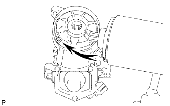

STARTER (for 2.0 kW Type) > REASSEMBLY |
| 1. INSTALL STARTER ARMATURE ASSEMBLY |
Apply high-temperature grease to the bearings, and install it to the starter yoke.
| 2. INSTALL STARTER BRUSH HOLDER ASSEMBLY |
Place the brush holder on the armature.
 |
Using a screwdriver, connect the 4 brushes.
Install a new O-ring to the groove of the starter yoke.
 |
Install the end frame with the 2 screws.
| 3. INSTALL MAGNET STARTER SWITCH ASSEMBLY |
Apply high-temperature grease to the steel ball and install it to the clutch shaft hole.
 |
Apply high-temperature grease to the return spring, clutch roller, retainer and idler gear.
Insert the return spring into the magnet starter switch hole.
Install the starter clutch, idler gear, retainer and clutch roller to the starter housing.
 |
Install the starter housing to the magnet starter switch with the 2 screws.
| 4. INSTALL STARTER YOKE ASSEMBLY |
Install a new O-ring to the groove of the starter yoke.
 |
Align the key of the starter yoke with the groove of the magnet starter switch.
 |
Install the starter yoke and armature with the 2 bolts.
Connect the lead wire to the magnet switch terminal with the nut.